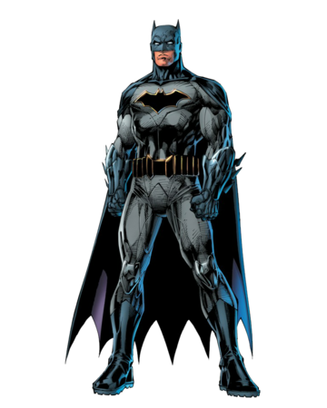
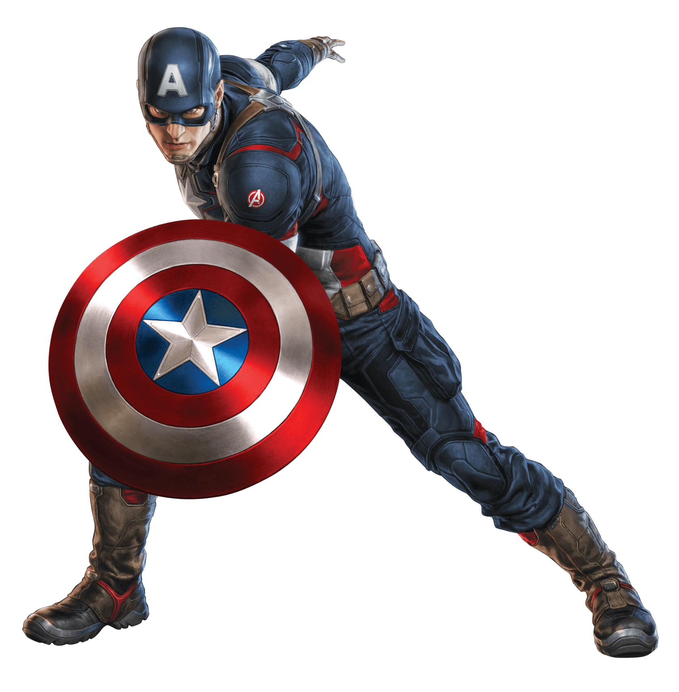
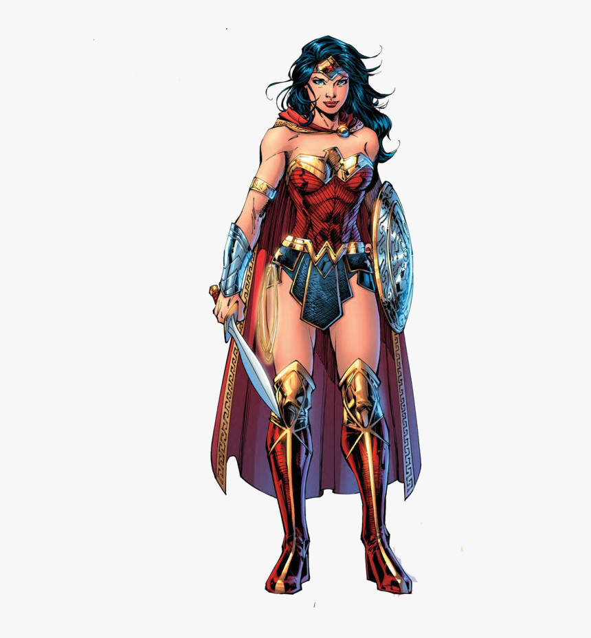
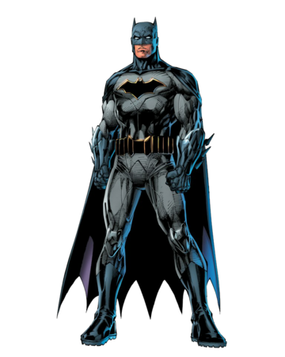
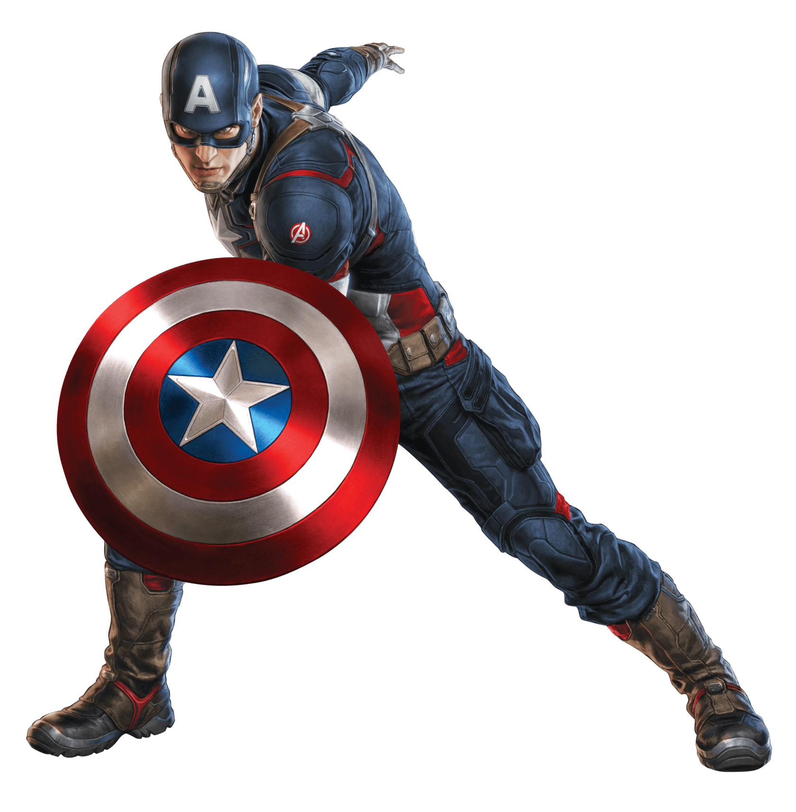
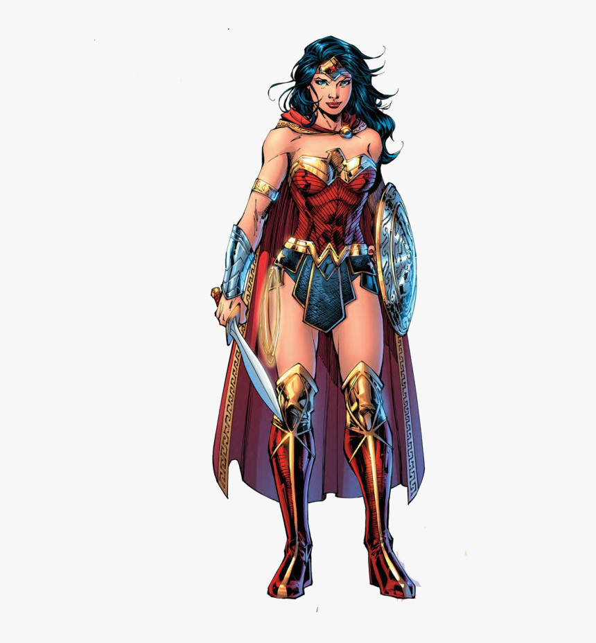
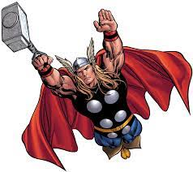
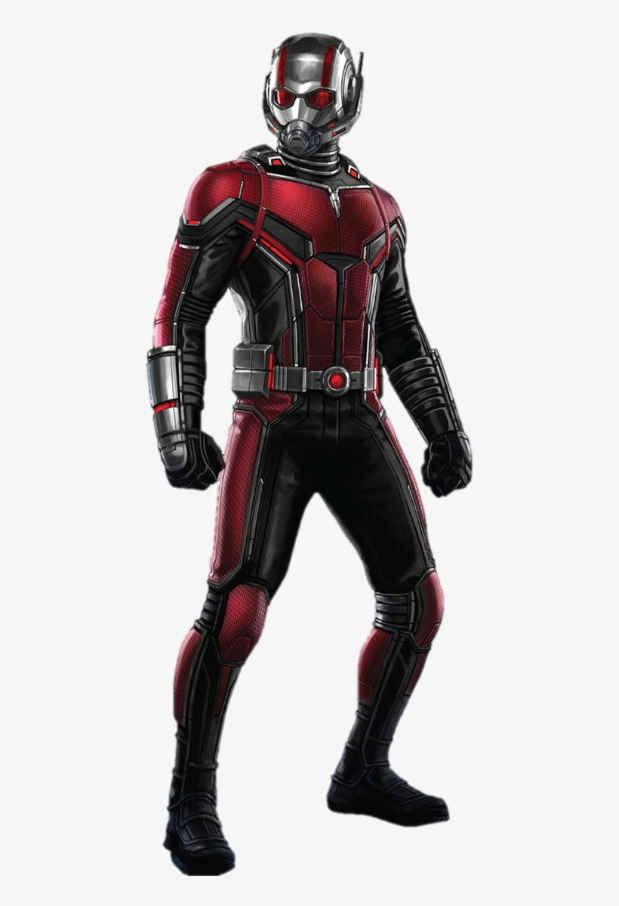
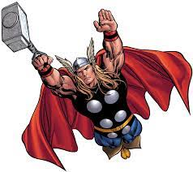
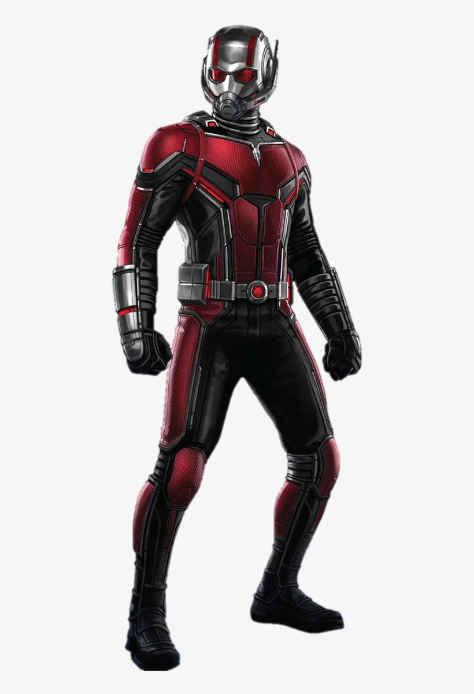

A comic book or comicbook,also called comic magazine or simply comic, is a publication that consists of comic art in the form of sequential juxtaposed panels that represent individual scenes. Panels are often accompanied by brief descriptive prose and written narrative, usually dialog contained in word balloons emblematic of the comics art form. Although comics has some origins in 18th century Japan and 1830s Europe, comic books were first popularized in the United States during the 1930s.
The first modern comic book, Famous Funnies, was released in the United States in 1933 and was a reprinting of earlier newspaper humor comic strips, which had established many of the story-telling devices used in comics. The term comic book derives from American comic books once being a compilation of comic strips of a humorous tone; however, this practice was replaced by featuring stories of all genres, usually not humorous in tone.
Comic books are reliant on their organization and appearance. Authors largely focus on the frame of the page, size, orientation, and panel positions . These characteristic aspects of comic books are necessary in conveying the content and messages of the author. The key elements of comic books include panels, balloons (speech bubbles), text (lines), and characters. Balloons are usually convex spatial containers of information that are related to a character using a tail element. The tail has an origin, path, tip, and pointed direction. Key tasks in the creation of comic books are writing, drawing, and coloring.
The two biggest comicbook companies ever are:
 





 


